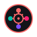

프로그램 구성
* 소제목을 클릭하면 관련 내용을 확인할 수 있습니다 팝업 스토어 운영 지원
팝업 스토어 운영 지원
- 창업 준비생 인큐베이팅: 6개월 과정의 팝업 스토어 운영 교육 및 실전 기회 제공(월 1회)
- 시제품 테스트베드: 개발 중인 제품/서비스의 시장 반응을 테스트할 수 있는 기회 제공(10개 팀 선발)
- 상품 패키징 & 디스플레이 컨설팅: 전문가의 제품 진열 및 패키징 자문 서비스(상시)
- 팝업 스토어 운영 원데이 클래스: 월 1회 창업 준비생 대상 팝업 스토어 운영 노하우 강의
비즈니스 역량 강화 프로그램
- 창업 멘토링 클리닉: 분야별 전문가의 1:1 맞춤형 비즈니스 상담(회당 30분, 사전 예약제)
- 미니 MBA 강좌: 마케팅, 재무, 인사관리 등 창업에 필요한 핵심 지식 교육(월 1회, 2시간)
- 소셜미디어 마케팅 워크숍: 인스타그램, 틱톡 등을 활용한 효과적인 마케팅 방법 교육(월 1회)
- 스타트업 피칭 콘테스트: 사업 아이디어를 5분 내 효과적으로 전달하는 경연(분기 1회)
신체 활동 기반 프로그램
- 플래시 모브 댄스: 간단한 안무를 배우고 단체로 참여하는 즉흥 댄스 타임(매 시간 정각, 10분)
- 야외 요가 & 스트레칭: 가볍게 따라할 수 있는 스트레칭 및 요가 클래스(19:00-19:30)
- 스트레스 펀치백: 시험 스트레스를 물리적으로 해소할 수 있는 펀치백 체험존
- 스포츠 게임 존: 탁구, 다트, 링토스 등 가벼운 스포츠 게임으로 스트레스 해소
예술 치유 프로그램
- 컬러링 테라피: 성인용 컬러링북과 미술 도구를 제공하는 드롭인 아트존
- 감정 표현 캘리그래피: 자신의 감정을 글씨로 표현하는 캘리그래피 워크숍(월 2회)
- 클레이 아트 테라피: 점토를 이용한 감정 표현 및 스트레스 해소 프로그램(월 2회)
- 음악 테라피 세션: 간단한 타악기를 활용한 집단 음악 치유 프로그램(월 1회)
스트레스 해소 프로그램
 실전 취업 준비 프로그램
실전 취업 준비 프로그램
- 1:1 이력서 & 자기소개서 클리닉: 전문 컨설턴트의 맞춤형 첨삭 지도(사전 예약제)
- 모의 면접 프로그램: 직무별 면접 시뮬레이션 및 피드백 제공(30분 세션)
- 직무 적성검사 & 해석: 개인별 적성 및 강점을 파악하는 심리검사 및 해석 서비스
- AI 면접 대비 훈련: 최신 AI 면접 시스템을 활용한 실전 연습 기회 제공
특화 교육 세미나
- 공시생 합격 전략 세미나: 최근 합격자들이 전하는 시험별 합격 노하우(월 1회)
- 직무별 실무 역량 특강: IT, 마케팅, 금융 등 분야별 실무 스킬 세미나(월 2회)
- 최신 채용 트렌드 분석: 인사담당자들이 전하는 채용 시장 동향 및 준비 방법(분기 1회)
- 디지털 역량 강화 워크숍: 엑셀, 파워포인트, 데이터 분석 등 실무 도구 교육(월 2회)
 라이브 음악 공연
라이브 음악 공연
- 어쿠스틱 세션: 기타, 피아노 등 어쿠스틱 악기 중심의 잔잔한 공연(18:30-19:30)
- 인디 뮤지션 쇼케이스: 유망한 인디 뮤지션들의 다양한 장르 공연(19:30-20:30)
- 노량진 음악 경연대회: 수험생 및 지역 청년들의 음악 경연 프로그램(분기 1회)
- 버스킹 오픈 스테이지: 사전 신청을 통한 일반인 공연 기회 제공(21:30-22:30)
 퍼포밍 아트 & 무용
- 플래시 댄스 퍼포먼스: 갑작스러운 군무로 시작되는 참여형 댄스 공연(월 1회)
- 즉흥 연극 쇼: 관객의 제안을 받아 즉석에서 연기하는 인터랙티브 공연(월 1회)
- K-pop 커버 댄스 쇼케이스: 지역 내 댄스팀들의 K-pop 커버 댄스 공연(월 2회)
- 스트릿 댄스 배틀: 청년 댄서들의 프리스타일 댄스 대결(월 1회)